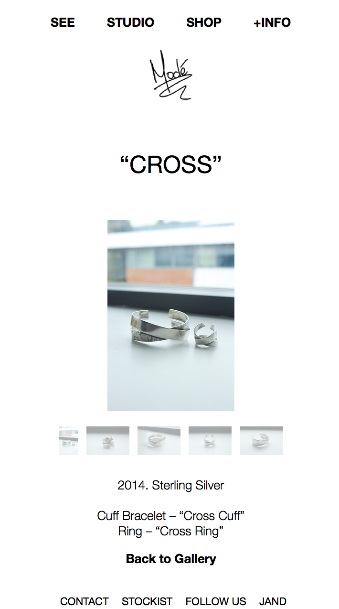
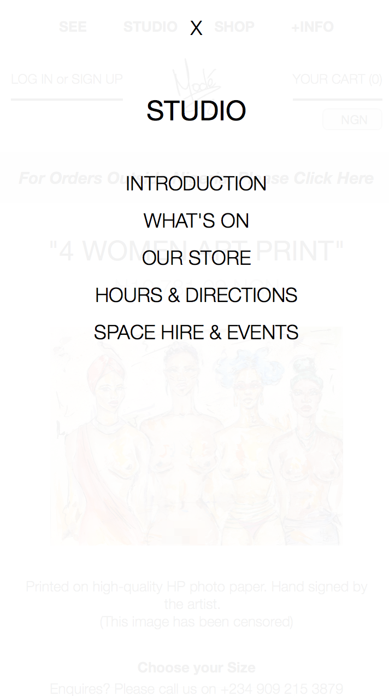
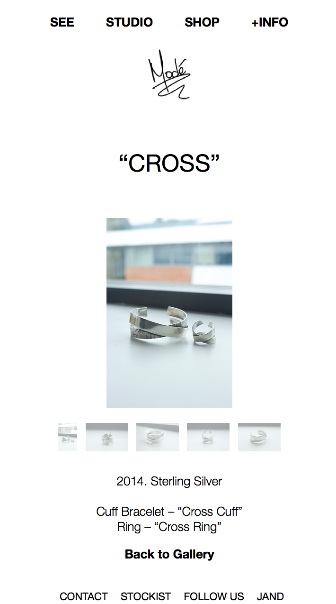
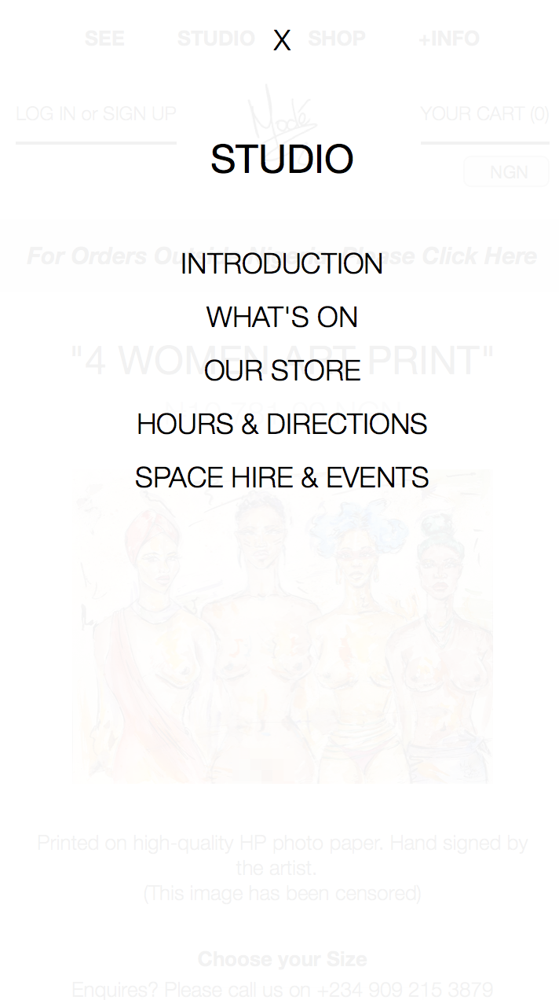

STUDIO OF MODÉ is the brainchild of Modé Aderinokun, who officially founded the company in 2012 in order to create a space where the voice of an artist with various skills can be clearly heard and understood.
Modé and I worked on the deisgn together, and I developed the website on a combination of Wordpress and Shopify. The website is divided into three main parts - Modé's portfolfio (SEE), the studio and gallery space (STUDIO), and the online shop (SHOP).
A key aspect of the design of the website was to make it seem as minimal as possible, despite the large amount of information avaiable. It was particularly important to have the website completely accessible on all devices due to the younger audience.


 


